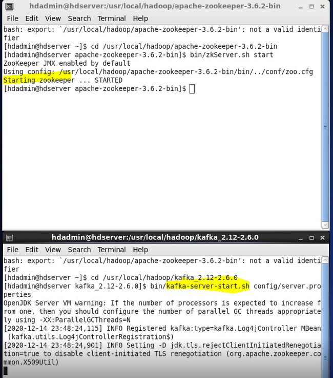
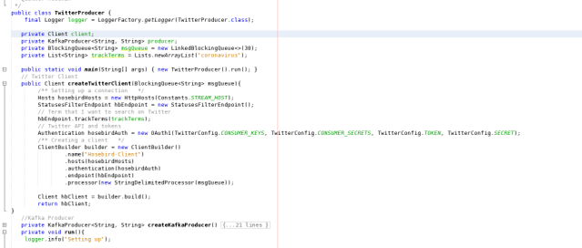
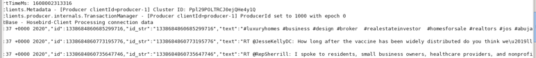

Apache Kafka
Java Hadoop project that utilized Apache ZooKeeper and APache Kafka to read/search for certain search terms provided by a java application running on a virtual machine.
Project Steps:
- Install and setup Apache zookeeper/Kafka
- Obtain Twitter api credentials
- Create Kafka topic and read tweets into topic
- Review topic
App Photos
Starting ZooKeeper and Kafka:
Command line was utilized to start both services

Java Producer:
Code snippet of the java producer to read in the tweets.

Console Output:
Output being displayed while the program is running.
